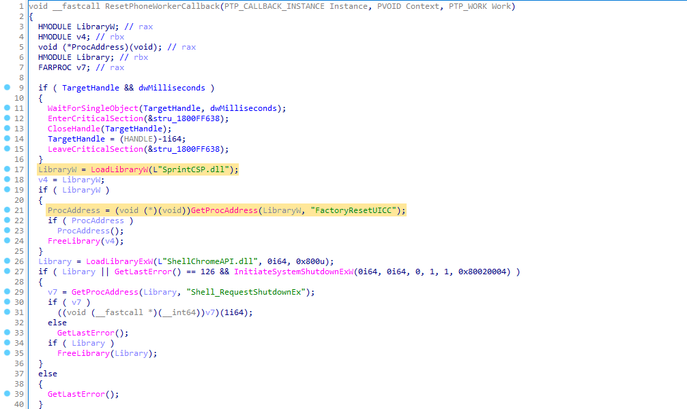
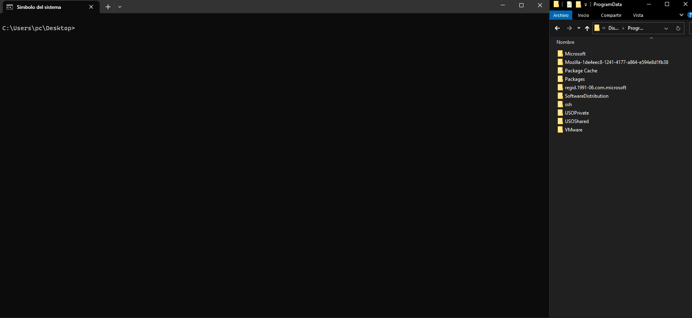

LPE via StorSvc
Windows Local Privilege Escalation via StorSvc service (writable SYSTEM path DLL Hijacking)
Summary
StorSvc is a service which runs as NT AUTHORITY\SYSTEM and tries to load the missing SprintCSP.dll DLL when triggering the SvcRebootToFlashingMode RPC method locally.
Description
The StorSvc.dll!SvcRebootToFlashingMode RPC method, calls StorSvc.dll!InitResetPhone which also calls StorSvc.dll!ResetPhoneWorkerCallback, that tries to load SprintCSP.dll as shown in the image below:

As this DLL is missing, it is loaded following the DLL Search Order flow and we can take advantage of this behaviour by placing a malicious DLL in a writable folder contained in the SYSTEM %PATH%. Then, the malicious DLL should be executed with SYSTEM privileges.
It is worth noting that the service is launched as NT AUTHORITY\SYSTEM in the service group LocalSystemNetworkRestricted which has the following privileges:
Privilege Name Description State
============================ =================================================== =============
SeTcbPrivilege Act as part of the operating system Enabled
SeLoadDriverPrivilege Load and unload device drivers Disabled
SeBackupPrivilege Back up files and directories Disabled
SeRestorePrivilege Restore files and directories Disabled
SeSystemEnvironmentPrivilege Modify firmware environment values Disabled
SeChangeNotifyPrivilege Bypass traverse checking Enabled
SeManageVolumePrivilege Perform volume maintenance tasks Enabled
The command line that corresponds to this service is C:\Windows\System32\svchost.exe -k LocalSystemNetworkRestricted -p -s StorSvc.
Proof of Concept
In this repo we provide 2 different source codes:
- RpcClient.exe: that triggers the RPC call.
- SprintCSP.dll: which can be placed to exploit the DLL Hijacking. This PoC runs a whoami command and writes the output to C:\ProgramData\whoamiall.txt. If you want to expand the functionality of this PoC you can edit the DoStuff() function at main.c.
The provided exploit should work by default and has been tested on Windows 10, Windows 11, Windows Server 2019 and Windows Server 2022. In order to make it work, the #define macro at storsvc_c.c must be changed so the exploit is adapted to the target machine's operative system.
After triggering the exploit it is necessary to stop or reboot the service, which SprintCSP.dll already does.
Steps
- Find writable SYSTEM path with
reg query "HKLM\SYSTEM\CurrentControlSet\Control\Session Manager\Environment" -v Path - Copy SprintCSP.dll to the writable path
- Execute RpcClient.exe
- Check
C:\ProgramData\whoamiall.txt

References